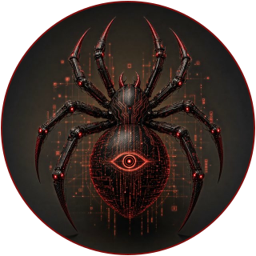
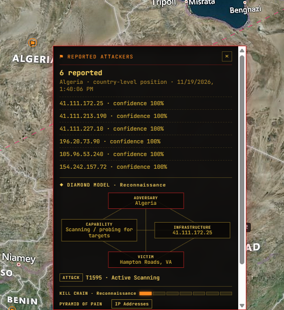
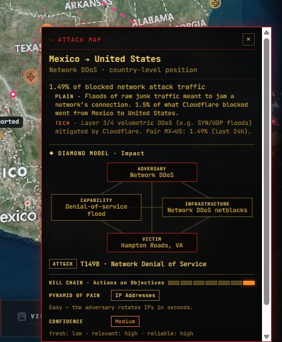
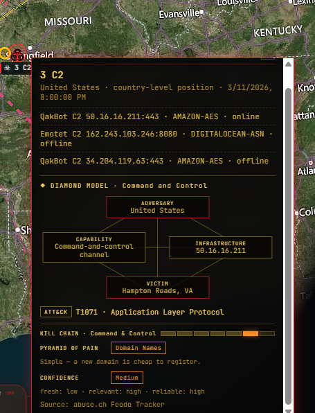
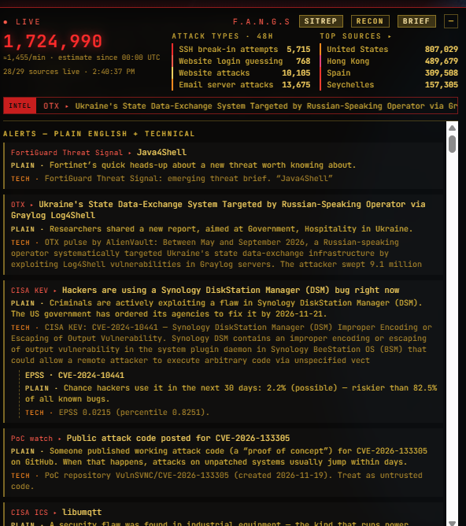
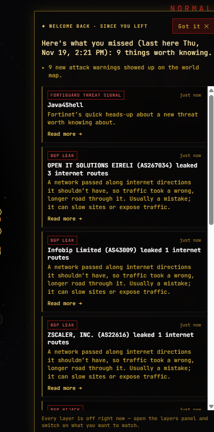

Ananzi 3.0 is a private map of the world that runs in a web browser. Its OSINT side is a live CesiumJS 3D globe over Hampton Roads — aircraft, ships, weather, local news and public cameras — and its cyber side is F.A.N.G.S (Fast Adversary Network Graphing Suite): a live "attack map" plus a dashboard that explains, in plain English, what's happening online right now.
The whole thing runs on a Vite provider-plugin backend — every threat feed is
proxied through its own keyless, cached /api/* endpoint, so the app starts with no API
keys and each source fails on its own without taking the map down. The rule throughout is
honesty by construction: the display never draws precision the data doesn't support.
| Asset | Function |
|---|---|
| Visualization platform | CesiumJS 3D globe (God's Eye View base, rebranded Ananzi) |
| Backend | Vite provider-plugin — one cached, keyless /api/* proxy per feed |
| F.A.N.G.S attack map | Worldwide attack origins, DDoS & BGP arcs, malware C2 and phishing markers |
| SITREP | One pane of glass: ATT&CK heat, patch priority, service status, password check, rolling cards |
| RECON | Correlated incidents, kill-chain reconstruction, a scrubbable timeline that replays on the globe, link graph, case-file export |
| Enrichment | GreyNoise, Shodan InternetDB, VirusTotal, Have I Been Pwned (k-anonymity) |
| Frameworks | MITRE ATT&CK · Diamond Model · Cyber Kill Chain · Pyramid of Pain · CySA+ confidence |
| Resilience | Per-source degradation, last-good retained, disk-cached, ~9,000 automated tests |
| Cover identity | 757 gold/red/black theme, original spider-mark, TOP SECRET flavor (cosmetic) |
F.A.N.G.S is the cyber layer: a live "pew-pew" attack map, like the ones on TV, plus a dashboard. The core design decision is an honest one — the map only draws a line when the feed actually names a victim. Every icon, dot and arc is clickable, and each popup explains itself twice: plain English first, then the technical detail.
Big public blocklists (SANS ISC / DShield, AbuseIPDB, blocklist.de, CINS, Emerging Threats, abuse.ch Feodo) are merged, de-duplicated, and each attacker address is geolocated — to a city where a local MaxMind GeoLite2 database or the keyless ip-api.com can pin it, otherwise to its country. Each origin draws as its own glowing crosshair icon, colored by the attack type it sends most and sized by volume. These feeds name the attacker, not the victim, so there is no arc funneling into Hampton Roads — drawing one would invent a target the data doesn't contain. Click one and it runs through the Diamond Model, ATT&CK, and the kill chain on the spot.

The genuine attacker→victim arcs are drawn from feeds that actually carry a destination: Cloudflare Radar DDoS pairs (attacker country → victim country, pink dashed arcs) and BGP hijacks & leaks (hijacker → victim, amber dotted arcs and rings). Those keep their moving "missile" heads; the origin icons do not. Malware command-and-control servers (abuse.ch ThreatFox, C2IntelFeeds, SSLBL) and phishing hosts (OpenPhish) sit as their own markers where they are hosted.


Every popup adds live lookups on that address: GreyNoise (mass scanner vs. targeted), Shodan InternetDB (what's exposed on the attacker's own box), and VirusTotal (how many vendors flag it; this one switches on with a free key). A heads-up display carries a running counter, a color key, a rotating readout (top source countries, most-attacked ports, hit industries, target countries, worldwide exposure) and a steady alert ticker from FortiGuard, AlienVault OTX, CISA and others. The BRIEF button opens the full briefing — every alert in plain English and technical terms, plus a map legend and a live list of which sources are working.

Opening F.A.N.G.S opens the SITREP: all of the cyber data in one scrollable pane, written so a tier-one help-desk tech can read it at a glance. It stacks several live boards over a plain-English card feed.
Click any threat and a worksheet opens on it: the Diamond Model, its Cyber Kill Chain phase, its Pyramid-of-Pain level, and a Timeliness / Relevance / Accuracy confidence score — the frameworks below, applied to that one event.
Step away and come back and F.A.N.G.S greets you with a WELCOME BACK panel: a short, plain-English list of what changed since your last visit — new attack warnings on the map, fresh threat signals, BGP leaks and hijacks — each as a card you can read or dismiss, so you re-orient in seconds instead of scrolling the whole feed.

RECON is its own panel (a button in the F.A.N.G.S header, beside SITREP and BRIEF). It does the analyst's job of assembling scattered alerts into reconstructed incidents rather than isolated pings.
Honesty is built in: correlation is labeled a hypothesis (co-occurrence, not confirmed attribution), the timeline is "as reported" rather than "as happened," and replay pulses are country-level — signals with no country are counted as "+N off-map" rather than invented onto the map.
F.A.N.G.S maps every event onto the standard analyst frameworks — the same ones taught in CompTIA CySA+ — so the display reads like tradecraft, not just a feed. You can see them at work in every popup above: the Diamond Model diagram, the ATT&CK technique chip, the kill-chain bar, the Pyramid-of-Pain level, and the confidence line.
| Framework | What it answers | Where it shows |
|---|---|---|
| MITRE ATT&CK | Which technique and tactic is this? | Heat map, technique chips, every event |
| Diamond Model | Adversary, capability, infrastructure, victim | Threat popover & RECON link graph |
| Cyber Kill Chain | How far did the intrusion get (7 phases)? | Threat worksheet & each RECON incident |
| Pyramid of Pain | How painful is this indicator for the adversary to change? | Threat worksheet, per event |
| CySA+ confidence | How much should I trust this intel? | Worksheet; lifted by corroboration |
Everything is public threat intelligence, mostly keyless. Keys are optional, handled through a POWER UP wizard, kept server-side in environment variables, and never committed — a key simply switches one ingredient on.
| Group | Feeds | Key? |
|---|---|---|
| Attacker IPs & arcs | DShield, CINS, Emerging Threats, blocklist.de, Feodo, Spamhaus DROP, Tor, AbuseIPDB, Cloudflare Radar (DDoS + BGP) | Keyless except AbuseIPDB, Cloudflare |
| Malware, C2 & phishing | abuse.ch ThreatFox / MalwareBazaar / SSLBL, C2IntelFeeds, OpenPhish, URLhaus, Malpedia | Mostly keyless |
| Vulns & advisories | CISA KEV, FIRST EPSS, GitHub PoC watch, FortiGuard, CISA ICS, Have I Been Pwned | Keyless |
| Per-IP enrichment | GreyNoise, Shodan InternetDB, VirusTotal, MaxMind GeoLite2 / ip-api.com | VirusTotal needs a free key |
| Cyber-news wire | 17 sources — Hacker News, BleepingComputer, Krebs, The Record, CyberScoop, Dark Reading, subreddits, filtered mainstream | Keyless |
Reuters and Downdetector are deliberately absent — neither offers a free public feed, and the project won't scrape.
BROWSER ─ CesiumJS 3D globe ───────────────────────────────┐
│
OSINT layers aircraft · ships · weather · news · CCTV │
F.A.N.G.S attack map · SITREP · RECON │
▼
VITE PROVIDER-PLUGIN BACKEND (one cached /api/* proxy per feed)
├── attack origins DShield · CINS · ET · blocklist.de · Feodo ─┐
├── arcs Cloudflare Radar (DDoS + BGP) │
├── malware / C2 abuse.ch · C2IntelFeeds · OpenPhish ├─ geolocate + enrich
├── vulns CISA KEV · EPSS · PoC watch · FortiGuard │ (GeoLite2 / ip-api,
├── status statuspage.io × 12 │ GreyNoise, Shodan,
└── news 17 RSS/Atom sources ─┘ VirusTotal, HIBP)
│
honest degradation: last-good · disk cache · per-source status
▼
SITREP boards + RECON incidents + two-voice popups
DATA_SOURCES.md — SANS
ISC, abuse.ch, Cloudflare Radar, CISA, FIRST, Spamhaus, GreyNoise, Shodan, VirusTotal, Have I
Been Pwned and the cyber-news outlets listed above. F.A.N.G.S presents their data; it does not
claim it.